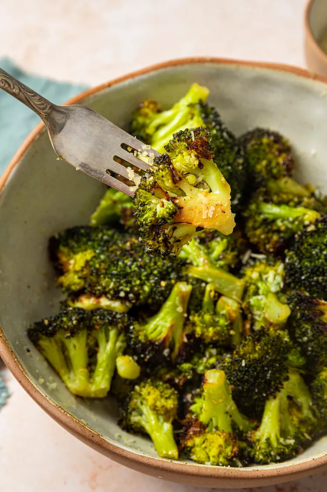

Roasted Broccoli

Description
Why would you ever steam a vegetable?! Don't steam vegetables!! Roast them! Haven't you
ever heard of the Mayard reaction? It makes vegetables delicious!
Ingredients
- Broccoli florets
- Extra virgin olive oil
- Salt
- Pepper
- Lemon
Steps
- Preheat the oven to 400 degrees.
- Put broccoli florets in a bowl. Toss with olive oil, salt, and pepper.
- Lay out on a cookie sheet and bake. Remove from oven once tips of florets
have blackened.
- Toss in a bit of fresh-squeezed lemon. Enjoy!